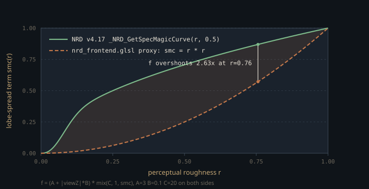

Monograph · Tree · ← Sitemap · RT shader includes
shaders
RT shader includes
pbr_unpack, rt_masks, NRD frontend used by raygen.
What a ray payload can afford to carry
Every shader in a ray tracing pipeline must declare the same `rayPayloadEXT` struct byte-for-byte, so a field added for one stage is paid for by all of them. OHAO's path-traced payload is five `vec3`s plus two floats and a `uint`, and three of those vec3s carry material data: `color` (emissive), `hitAlbedo`, and `attenuation`. Only the last is packed, and `pbr_unpack.glsl` is the contract for reading it back. The closest-hit shader writes roughness, metallic and a curvature proxy into its three floats:
payload.attenuation = vec3(roughness, clamp(metallic, 0.0, 1.0), curv);shaders/rt/pt_closesthit.rchit:161The proxy is the summed pairwise divergence of the hit triangle's three vertex normals, so it is constant across a triangle — the code's own comment calls it per-pixel. The decode of the other two floats looks like it ought to be two clamps. It is not: it also has to accept two obsolete encodings of the same float.
Two legacy encodings, and the C++ that still writes them
Before OHAO carried a continuous metallic, `.x` did double duty. A *negative* value meant "metal"; on top of that, ±10 was added as a *shape* flag — sphere versus cube, detected on the C++ side from vertex count — which works because roughness itself never reaches 1, so a magnitude of 10 or more can only be the flag:
// Add 10.0 if sphere shape (roughness is always < 1, so 10+ means sphere)ohao/gpu/vulkan/rt_build.cpp:888`unpackHitPbr` still honours both rules, gating the sign one on `.y` being near zero — the signature of a producer that never filled the metallic channel:
if (att.x < 0.0 && att.y < 1e-4) {shaders/rt/includes/pbr_unpack.glsl:9Neither branch can fire on today's payload. `payload.attenuation` is written in exactly one place, from the per-material `matColors` buffer at binding 10, and roughness is clamped to at least 0.04 before the write, so `.x` is always positive and never near 10:
roughness = max(roughness, 0.04);shaders/rt/pt_closesthit.rchit:148The *encoding* is not dead, though — only its route into the payload is. Two loops in `rt_build.cpp` still build the signed, shifted float and push it through `setMaterialData()` into the path tracer's binding 3:
// Keep historic packing for any code still reading instance materials.ohao/gpu/vulkan/rt_build.cpp:371Nothing reads it. All three raygens and `pt_closesthit.rchit` declare `MaterialBuffer` at binding 3 and none of them ever indexes `materialBuf`; the only shader in the tree that does is `rt_gi.rchit`, on the deferred GI technique's own descriptor set. So the format has a live producer and no consumer — which is the reason the decoder's shape is worth understanding before touching it, not the reachability of its branches.
The refactor that left two decodes behind
`unpackHitPbr` has eleven call sites. In each of `pt_raygen.rgen`, `pt_raygen_offline.rgen` and `pt_raygen_realtime.rgen` it decodes the first hit once and a secondary bounce twice — once in the specular walk, once in the diffuse walk — and in the two profile raygens it also feeds the roughness AOV. Two further decodes open-code the old rules instead.
The harmless one fills `pt_raygen.rgen`'s roughness AOV and names the historic encoding in a comment:
// shifted (historic encoding from Feature 1.1 era).shaders/rt/pt_raygen.rgen:237It takes `abs()` and undoes the shift, so on a payload the closest-hit produced it agrees with `unpackHitPbr` exactly. Duplication, not divergence.
The consequential one is in the realtime profile's ReSTIR-GI secondary-vertex decode, which reimplements the *sign* rule and drops the `.y` guard entirely:
bool sIsMetal = (sPacked < 0.0);shaders/rt/pt_raygen_realtime.rgen:1413Since the closest-hit never writes a negative roughness, `sIsMetal` is always false, and it gates two things. The reservoir's secondary vertex gets a dielectric F0 whatever the artist painted:
vec3 sF0 = sIsMetal ? sAlbedo : vec3(0.04);shaders/rt/pt_raygen_realtime.rgen:1417It is also the metal test on the diffuse weight — `kD = (1.0 - F) * (sIsMetal ? 0.0 : 1.0)`, written identically in that vertex's NEE branch and its env-IS branch — so a metal there also keeps a full Lambertian lobe that should be zero. Both halves err the same way: untinted specular, plus diffuse that should not exist.
ReSTIR-GI is the default there (the block is the `else` of `if (restirGiLegacy)` and the `PT_FLAG_RESTIRGI_*` bits are all opt-outs), so this is live: one bounce into the realtime GI path, metals shade like plastic. Routing the block through `unpackHitPbr` is the fix, because that function reads `.y`, which is where the metallic actually lives. The dependency runs one way only: the block never calls `unpackHitPbr`, so deleting the legacy branches inside the function would neither break it nor repair it.
Two identical files, one of which never compiles
`shaders/rt/includes/pbr_unpack.glsl` and `shaders/includes/pbr_unpack.glsl` are byte-identical, and only the first is ever compiled. The raygens write `#include "includes/pbr_unpack.glsl"`; glslc resolves a quoted include relative to the including file before consulting `-I`, so from `shaders/rt/` the sibling `includes/` wins. The root copy is reachable only via the `-I <shaders>` search path — that is, only if the `rt/` copy were deleted:
COMMAND ${GLSLC} --target-env=vulkan1.3 -I${CMAKE_CURRENT_SOURCE_DIR} -I${CMAKE_CURRENT_SOURCE_DIR}/includes ${SHADER} -o ${SPIRV}shaders/CMakeLists.txt:46`glslc -M` on `pt_raygen.rgen` confirms which copy wins: the dependency list names `shaders/rt/includes/pbr_unpack.glsl`. That same list does reach `shaders/includes/` for seven other headers — `rt/mis.glsl`, `rt/env_sampling.glsl`, `rt/sampler_api.glsl` and `material/ggx_aniso.glsl` directly, plus the three sampler files `sampler_api.glsl` pulls in transitively — all resolved through the `-I <shaders>` root, because `shaders/rt/includes/` has no `rt/` or `material/` subdirectory to shadow them. `pbr_unpack.glsl` is the one name that exists in both places, and the sibling copy takes it every time. Editing the root copy changes no binary and warns about nothing.
The build does not track either copy
The list that decides when a shader is recompiled is globbed from one directory:
"${CMAKE_CURRENT_SOURCE_DIR}/includes/**/*.glsl"shaders/CMakeLists.txt:32That glob roots at `shaders/includes/` and matches only files one level deeper: evaluated standalone it yields thirty `.glsl` files, all in a `shaders/includes/<subdir>/`. Neither `shaders/rt/includes/*.glsl` nor the two `.glsl` files directly in `shaders/includes/` appear, so they are absent from the `DEPENDS` list of every compile command. Editing `pbr_unpack.glsl` or `rt_masks.glsl` alone rebuilds nothing.
Both hazards here are silent. Edit the wrong copy and the compiler never sees the change; edit the right copy and the build system never notices. Touch a `.rgen` — or clear `build/shaders/` — after changing either file.
Normalising a hit distance so REBLUR can decode it
`nrd_frontend.glsl` is the front-end for NVIDIA's REBLUR denoiser. Its `IN_DIFF_RADIANCE_HITDIST` and `IN_SPEC_RADIANCE_HITDIST` inputs are single RGBA images: radiance in `.rgb`, and in `.a` a hit distance squeezed into [0,1]. REBLUR re-expands that alpha with its own normalisation, so the writer's function and the denoiser's must be the *same* function or the decoded distance is wrong. The normalisation is
where $d$ is the traced hit distance in world units, $z_{\text{view}}$ the view-space depth of the primary hit, $r$ perceptual roughness, and $\mathrm{smc}$ a lobe-spread term running from 0 at a mirror to 1 at a fully rough surface. The $A + |z|B$ factor grows the scale with distance, so a reflection seen from far away can still be tens of metres long without saturating; the second factor stretches it by up to $C$ for sharp lobes, whose hit distances are longest. OHAO ports this verbatim at $A=3$, $B=0.1$, $C=20$:
float f = (NRD_HIT_DIST_PARAMS.x + abs(viewZ) * NRD_HIT_DIST_PARAMS.y)shaders/includes/rt/nrd_frontend.glsl:31Everything except $\mathrm{smc}$.
Where the port diverges, and by how much
NRD v4.17 computes $\mathrm{smc}(r) = \bigl(1 - 2^{-200r^2}\bigr)\sqrt{r}$ — the `_NRD_GetSpecMagicCurve` helper in `NRD.hlsli`, which CMake fetches rather than vendors in-tree. OHAO substitutes plain $r^2$, and says so in the comment:
float smc = roughness * roughness; // lobe-spread proxy (NRD uses a richer F)shaders/includes/rt/nrd_frontend.glsl:29The two agree at $r = 0$ and $r = 1$, and cross once more at $r \approx 5 \times 10^{-5}$, where both sit below $10^{-8}$ and nothing depends on which is larger. Above that crossing the proxy is much smaller all the way to $r = 1$, so the second factor stays nearer $C$, $f$ comes out too large, and the normalised distance in `.a` too small. Evaluating both closed forms at the shipping constants, the overshoot in $f$ peaks at 2.63x near $r = 0.76$.

Because REBLUR de-normalises with its own curve, it reconstructs a hit distance up to ~2.6x shorter than the raygen traced across the mid-to-rough range. Hit distance sizes REBLUR's specular reprojection and blur footprints, so the error is systematic, not noise. Its perceptual cost is not measured here.
The A/B/C triple is a `const vec3` compiled into the shader, while the C++ side exposes only A: `NrdReblurProfile` carries a `hitDistanceParamA` field and no B or C, and `setReblurSettings` starts from `nrd::ReblurSettings`'s defaults and overrides that one member. Both sides sit at A = 3.0 today, but nothing enforces it: turning the `hitDistanceParamA` knob in C++ silently desynchronises the front-end from the denoiser consuming it, and the GLSL constant has no way to follow. Whether the alternative — uploading the triple alongside the other per-frame raygen parameters — was ever weighed is not recorded anywhere in the tree.
s.hitDistanceParameters.A = p.hitDistanceParamA;ohao/render/rt/denoise/nrd_denoise.cpp:227The YCoCg round trip, and a clamp that earns its place
REBLUR takes radiance in YCoCg and returns it the same way, so `nrd_frontend.glsl` carries both directions of NRD's transform (Y = ¼R + ½G + ¼B, Co = ½R − ½B, Cg = −¼R + ½G − ¼B) — an exact algebraic inverse, so an unfiltered round trip is lossless. The compositor unpacks before remodulating by the demodulated albedo and F0 AOVs:
vec3 diffRad = nrdYCoCgToLinear(imageLoad(inDiffRad, p).rgb);shaders/rt/nrd_compose.comp:27The clamp at the end of the inverse is not cosmetic:
return max(r, vec3(0.0));shaders/includes/rt/nrd_frontend.glsl:24What comes back from REBLUR is not a round trip but a *filtered* YCoCg signal, and a luma/chroma pair blended from neighbouring pixels can invert to a negative channel. Without the clamp those negatives survive remodulation and land in the HDR buffer.
`nrd_frontend.glsl` is included by `nrd_compose.comp` and by the two profile raygens, and by nothing else:
vec4 diffPacked = nrdPackRadianceHitDist(diffDemod, diffHitDist, firstHitViewZ, firstHitRoughness);shaders/rt/pt_raygen_realtime.rgen:1933The default offline `PathTracer` raygen, `pt_raygen.rgen`, does not include it. NRD packing is a profile feature, not something the flagship offline tracer does.
rt_masks.glsl has no readers, and its masks cull nothing
The third header defines two ray-mask constants and pins them to their C++ twin:
#define RT_RAY_MASK_STATIC 0x01shaders/rt/includes/rt_masks.glsl:3No shader in the tree includes it. The two that want a static-only ray mask paste the literal instead — `rt_shadow.rgen` with the constant's name in a trailing comment, `rt_gi.rgen` pointing at the C++ header rather than at this one:
uint rayMask = 0x01; // RT_RAY_MASK_STATIC (see rt_visibility.hpp)shaders/rt/rt_gi.rgen:84The mask also selects nothing at runtime. Vulkan intersects an instance when `rayMask & instanceMask` is non-zero, and the one `addInstance` call in the TLAS build hands every instance 0xFF:
uint32_t instanceMask = rt::MASK_STATIC_ONLY;ohao/gpu/vulkan/rt_build.cpp:866`0x01 & 0xFF` is non-zero, so the "static only" ray hits everything; `MASK_ANIMATED = 0x00` exists in `rt_visibility.hpp` and is never assigned. A second, independent cull was written to work around exactly that: the GI closest-hit shader treats an instance as a miss when the alpha of its per-instance material entry falls below 0.5, and records why:
// Workaround for RTX 5070 driver bug: traceRayEXT cull mask is ignored.shaders/rt/rt_gi.rchit:18That test never fires either. The buffer is filled with alpha 1.0 at creation, and the one `setMaterialAlbedos` call in the TLAS build passes albedos only, leaving the optional `flags` vector empty — so every instance is written back at alpha 1.0:
float alpha = (i < flags.size()) ? flags[i] : 1.0f;ohao/render/rt/rt_gi_technique.cpp:196There is nothing to mark in any case; the same TLAS build records that skeletal animation is gone and every mesh is static. Four layers describe a visibility mechanism — GLSL header, C++ header, inline literals, and a driver-bug workaround beneath them — and none of them removes an instance from a trace. Keep the file against the day an instance really does need hiding; do not read it as a description of what the tracer does.
Contracts
- `pt_closesthit.rchit` must write `attenuation` as (roughness, metallic, curvature) in that order. `pt_miss.rmiss` declares the same payload and writes `hitDist = -1.0`, `color` and `envPdf`, but never `attenuation` — so `unpackHitPbr` is valid only inside the `payload.hitDist >= 0` branch.
- Edit `shaders/rt/includes/pbr_unpack.glsl`; the `shaders/includes/` copy is shadowed by include-resolution order and never compiled. Neither file is in the CMake `DEPENDS` list, so force a shader rebuild after touching it.
- `NRD_HIT_DIST_PARAMS` in GLSL and `nrd::ReblurSettings::hitDistanceParameters` in C++ must hold the same A, B, C. Only A is exposed through `NrdReblurProfile`; B and C must therefore stay at NRD's defaults of 0.1 and 20.
- The legacy branches in `unpackHitPbr` are unreachable on the shipping payload, and removing them changes nothing at any of its eleven call sites. What must not be skipped is the reverse: the ReSTIR-GI block in `pt_raygen_realtime.rgen` open-codes the sign rule and does *not* call `unpackHitPbr`, so deleting the branches will not repair it. Route that block through the function first.
Source files
shaders/rt/pt_closesthit.rchitohao/gpu/vulkan/rt_build.cppshaders/rt/includes/pbr_unpack.glslshaders/rt/pt_raygen.rgenshaders/rt/pt_raygen_realtime.rgenshaders/CMakeLists.txtshaders/includes/rt/nrd_frontend.glslohao/render/rt/denoise/nrd_denoise.cppshaders/rt/nrd_compose.compshaders/rt/includes/rt_masks.glslshaders/rt/rt_gi.rgenshaders/rt/rt_gi.rchitohao/render/rt/rt_gi_technique.cppshaders/includes/pbr_unpack.glslParent hub for the full pipeline narrative; this page is the file-level design unit. Sitemap · hover glossary terms anywhere.